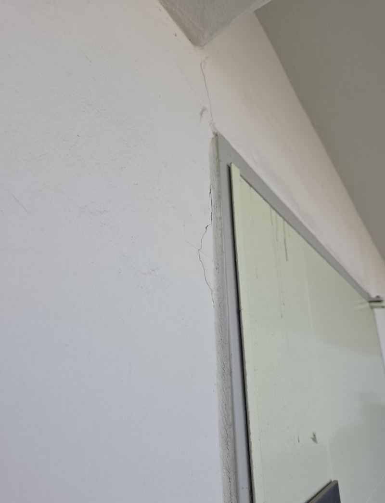
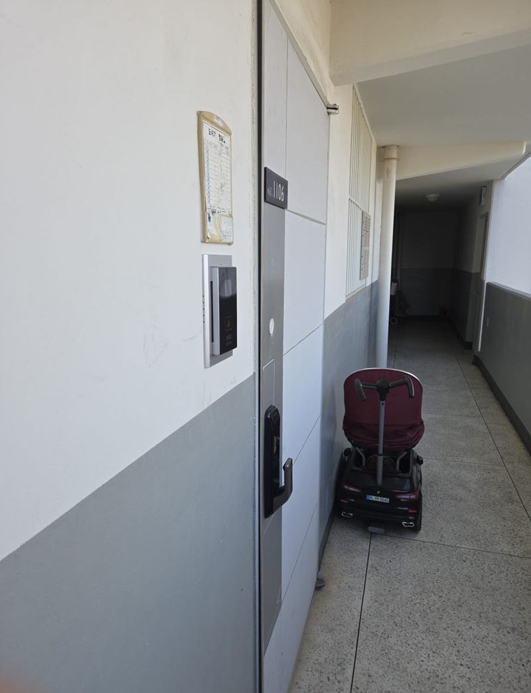
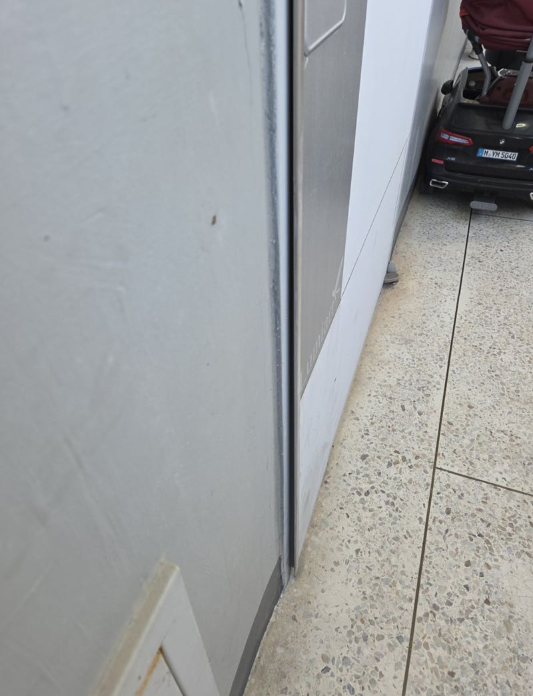
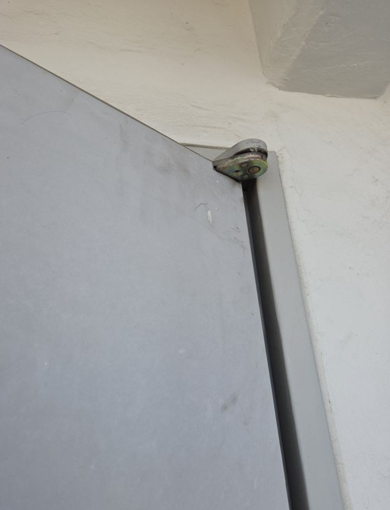
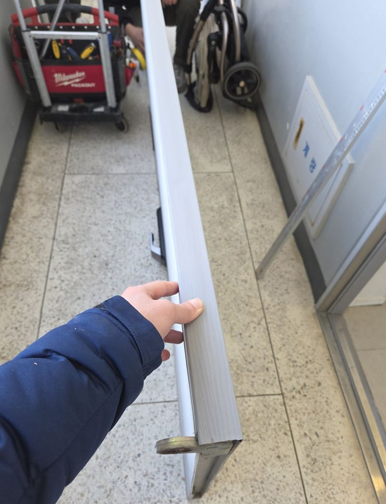
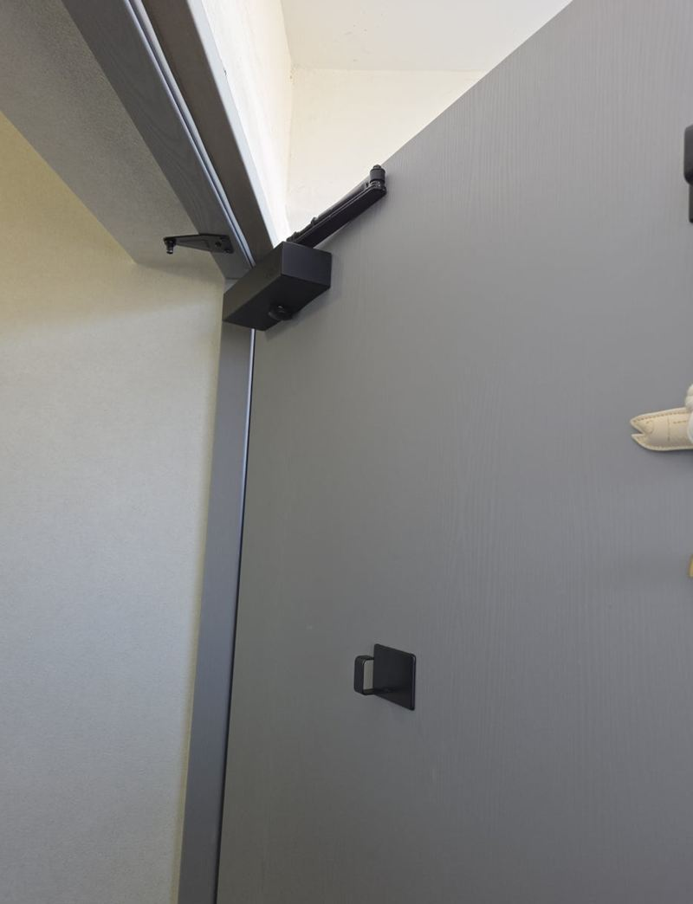
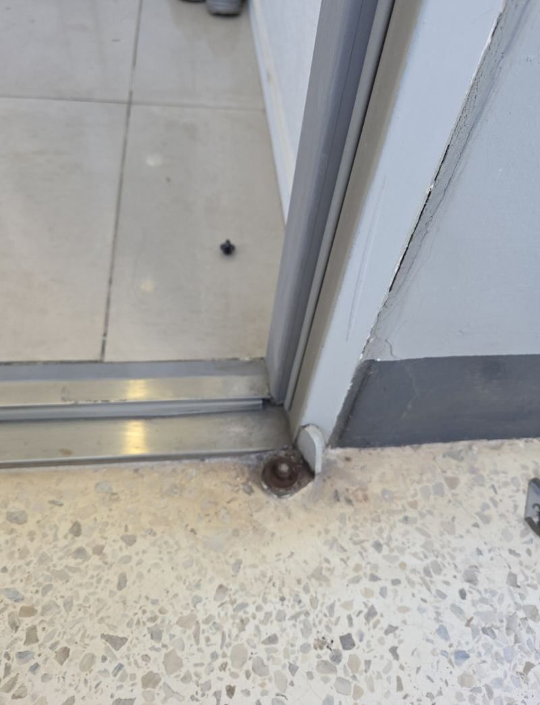

광명 현관 방화문 틀어짐, 힌지 수리 방법


수리 전수리 후← 밀어서 전후 비교 →
"며칠 전부터 현관문이 닫힐 때 툭 걸리고, 닫아도 옆이 살짝 벌어져요." 광명 아파트였어요. 문을 열어 보니 위쪽 힌지 근처에 유격이 생겨, 닫힐 때 문짝이 문틀과 어긋난 자리에서 부딪히고 있었어요. 방화문은 꼭 닫혀야 제 역할을 해서 미루면 안 되는 상태였어요. 처진 힌지를 떼어 새 힌지로 바꾸고, 각도가 틀어진 도어클로저를 다시 맞춰 문이 한 번에 맞물리게 했어요.
| 현장 | 광명 광명동 아파트 세대 현관 |
|---|---|
| 증상 | 닫힐 때 걸림, 옆·위 틈, 흔들림, 닫힘 속도 불규칙 |
| 한 일 | 맞물림 지점 확인 → 상·중단 힌지 분해 → 새 힌지 장착 → 문틀 간섭 조정 → 도어클로저 각도·속도 보정 → 닫힘 확인 |
| 인원 | 방화문 무게 때문에 2명이 문을 받치며 작업 |
방화문이 틀어지는 이유
현관 방화문은 철로 된 무거운 문이에요. 그 무게를 힌지 몇 개가 받치고 있어서, 힌지 나사가 헐거워지거나 힌지가 처지면 문 전체가 조금씩 내려앉아요. 도어클로저 힘과 각도가 어긋나 있으면 문이 매번 같은 자리에 세게 부딪혀 틀어짐이 빨라져요.


문을 세게 닫는 습관이 반복되면 문짝 자체가 비틀려 수리가 더 어려워져요. 걸린다고 힘으로 밀어 닫으면 상태가 더 나빠져요.
틀어진 방화문 고치는 순서
어디가 부딪히는지 확인
문짝과 문틀이 맞물리는 지점을 따라가며 어느 쪽으로 틀어졌는지 봤어요.
힌지 분해
상단·중단 힌지를 풀면 문이 갑자기 기울 수 있어서, 한 명이 문을 받치고 다른 한 명이 분해했어요.


새 힌지 장착과 간섭 조정
새 힌지를 달고, 문틀에 닿던 구간을 하나씩 조정했어요.

도어클로저 보정
원래 각도에서 벗어나 닫힘 속도가 들쑥날쑥했어요. 부드럽게 닫히면서도 끝에서 꼭 맞물리도록 맞췄어요.

마친 뒤 고객분께 직접 열고 닫아 보시게 했어요. 걸리던 소리와 흔들림이 사라지고, 벌어지던 틈도 붙어 바람이 덜 들어오게 됐어요.
이런 신호가 보이면 점검하세요
- 닫아도 옆이나 위에 틈이 보여요문이 내려앉기 시작했을 수 있어요.
- 닫히는 속도가 매번 달라요도어클로저 조정이 필요해요.
- 문틀에 긁히는 소리가 나요힌지 처짐으로 문이 문틀에 닿는 경우가 많아요.
- 잡았을 때 덜렁거려요힌지 나사가 풀렸을 수 있어요.
방화문 오래 쓰는 습관
- 손잡이를 잡고 닫기문을 밀어 던지듯 닫으면 힌지와 클로저에 충격이 쌓여요. 손잡이를 잡고 끝까지 따라가 주세요.
- 문에 무거운 걸 걸지 않기문 뒤 걸이에 가방이나 우산을 잔뜩 걸면 힌지가 빨리 처져요.
- 바람 부는 날 조심복도 창이 열려 있으면 바람에 문이 세게 닫혀요. 열어 둘 땐 말굽을 내려 두세요.
- 소리가 바뀌면 점검닫힐 때 소리가 달라지거나 끝에서 튀면 클로저 조정 시기예요.
현관 방화문 수리 질문
문을 통째로 바꿔야 하나요?
문짝이 크게 휘지 않았다면 힌지와 클로저 손보기로 되는 경우가 많아요.
도어락도 같이 봐 주나요?
문이 틀어지면 도어락이 잘 안 잠기기도 해요. 문을 맞춘 뒤 잠김 상태도 확인해요.
문이 너무 세게 닫혀요.
도어클로저 속도 조절로 줄일 수 있어요. 오일이 새면 클로저 교체가 필요해요.
관리사무소 허락이 필요한가요?
세대 현관문 부품 교체는 대개 괜찮지만, 단지 규정이 있으면 미리 확인해 두세요.
문틀에 녹이 슬었어요.
녹 범위를 보고 정리와 도장을 함께 할지 상의해요.
상가 출입 방화문도 하나요?
상가·계단실 방화문도 힌지와 클로저 수리를 해요.
힌지만 조이면 안 되나요?
나사만 풀린 거라면 조이는 것으로 되지만, 힌지가 처져 휘었다면 조여도 금방 다시 내려앉아요.
문이 닫히다 중간에 멈춰요.
도어클로저 힘이 약해졌거나 각도가 틀어진 경우가 많아 클로저부터 확인해요.
방화문 기능이 떨어지나요?
틈이 벌어진 채로 두면 연기와 불길을 막는 힘이 약해져요. 꼭 맞물리게 해 두는 게 중요해요.
다른 현관문·방화문 현장
문을 연 상태에서 힌지 쪽과 위쪽 클로저를 찍어 보내 주세요.
전화 상담 010-4517-9872